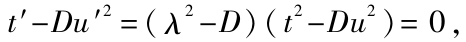
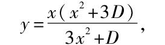
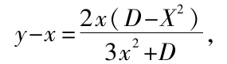
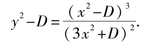
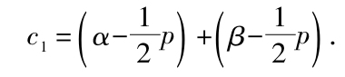
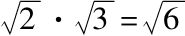

β显然可知，若较大的数α是有理数，则它必属于类B2（因为α≥a′1）．合并这两个考察结果，我们得到下列结论：如果一个分割是由数α产生，那么任一个有理数依据它是小于或大于α而属于类A1或类A2；如果数α本身是有理数，那么它可以属于两个类中的任一个．
β显然可知，若较大的数α是有理数，则它必属于类B2（因为α≥a′1）．合并这两个考察结果，我们得到下列结论：如果一个分割是由数α产生，那么任一个有理数依据它是小于或大于α而属于类A1或类A2；如果数α本身是有理数，那么它可以属于两个类中的任一个．1858年秋天我的注意力第一次瞄准这本小册子所考虑的主题，作为苏黎世工业大学的教授，我第一次发现我有责任讲清楚微分学的基础，并且甚至比在面对缺乏真正的算术科学基础时的感觉更要强烈．在讨论变量趋向固定的极限值时，特别是证明每个连续增加但不超过一个界值的变量必定趋于一个极限的定理时，我求助几何的显然性．我认为，即使现在，在初次讲述微分学时这样求助于几何直观从教学的观点看是极为有用的；并且如果不愿意花费太多的时间，它确实是必不可少的．但是，无可否认，这种引进微分学的形式可以断言是不科学的．对我本人而言，这种不满意感是如此不可抗拒，使我作出不可动摇的决定：坚持探讨这个问题直到我找到无穷小分析的纯粹算术的并且完全严格的基础．人们经常提出这样的看法：微分学处理连续量，并且在任何地方也没有给出这种连续性的阐述；甚至微分学的最严格的讲法也并非建立在它的连续性证明上，而是或多或少借助于直观，它们要么像是几何概念，要么是通过几何暗示的概念，或者基于从来未用纯算术方式建立的定理．例如，经过非常细致的研究使我确信，在上面提到的这些定理中有一个定理或者它的任何等价形式，可以在某种方式下看作无穷小分析的充分的基础，于是剩下的只是发现它在算术元素中的真实起源因而同时确保连续性概念的真正的定义．1858年11月24日我获得成功，并且几天后我将我考虑的结果告知了我的挚友杜雷基（Durège），他善意地与我作了长时间讨论．后来我向我的几个弟子讲述了这些关于算术的科学基础的观点，并且在布朗斯威克教授科学俱乐部宣读了关于这个主题的论文，但是我不能作出将它发表的决定，因为首先，它的表达看来不完全简洁，其次，理论本身成功的希望还没太多把握．不过，由于这个原因我已经大体上决定选择这个主题作为课题，几天前即3月14日，我收到海恩（E.Heine）出于友情向我提供的他的论文《函数论基础》（Die Elemente der Funktionenlehre）时，我更加确信我的决定的正确性．总的说来，我完全同意这篇论文的主旨，并且的确很难再说些什么，但我要坦率地承认，我自己的结果就我看来形式上要简单些，并且更加清楚地给出了重点．当我写这个前言时（1872年3月20日），我恰好收到康托尔的有意义的论文《三角级数理论中的一个定理的推广》（Über die Ausdehnung eines Satzen aus der Theorie der trigonometrischen Reihen），我要为此对这位有创造性的作者致以衷心的感谢．认真阅读后，我发现这篇论文第2节给出的公理除了表达形式外，与我在第3章作为连续性的本质所给出的结果是一致的．由于它是更高类型的纯粹抽象的定义，所以有其某种优点．但我当时还不可能看到这篇论文，而是完全由我自己完成实数域的研究．
我们在此预先假定有理数的算术已经建立，但同时我认为只阐明下面认定的观点而不加证明地回顾一些重要的事实是有益的．我认为整个算术是必要的，或者至少自然数，最简单的算术作用的结果，计数的结果是必要的，并且计数本身除了逐次产生正整数的无穷系列外（其中每个数由它紧前面的数定义），其他什么都不需要；最简单的作用是从一个已经形成的一个数到按顺序形成的新的一个数，这串数本身形成非常有用的人类智力手段；它提供通过引进四种基本算术运算而得到的无穷无尽的值得注意的定律．加法是上面提到的最简单的作用到单个作用的任何任意重复的组合；由它类似地产生乘法，同时这两个运算的实施总是可能的，其逆运算减法和除法的实施是有限制的．无论会有什么直接的原因，也无论是与经验或直觉相比较或类比，都可能导向那里；可以肯定，在每种情形这种实施非直接运算的限制恰是新的创造性作用的真正的起因；于是负数和分数被人类大脑创造；并且在所有有理数的体系中赢得无限完美的机制．我们用R表示这个数系，它首先具有作为数域（Zahlkörper）特征的完备性和自封性（我们在别处[1]论述过），这就是说对于R中任何两个数四种运算始终可以实施，亦即运算得到的结果总是R中的一个数，只是在除法情形要排除零作为除数．
为了我们的直接目的，体系R的另一个性质更加重要；它可以表述为：体系R形成一个向相反的两侧伸展到无穷的一维良序域．我们通过借助几何思想的表达就足以说明它意味着什么；但恰是由于这个原因我们有必要清楚地引进对应的纯算术性质，以免看起来好像算术需要它本身以外的思想．
为表明符号a和b代表同一个有理数以及相同的有理数，我们令a=b及b=a．两个有理数是不同的这个事实在此表现为差a-b或者是正的或者是负的．在前一情形称a大于b，b小于a；这也可以用符号a>b，b<a表示[2]．因为在后一情形b-a有正值，所以b>a，a<b．对于两个不同的数的这两种情形有下列性质：
Ⅰ．如果a>b，并且b>c，那么a>c．只要a，c是两个不同（或不相等）的数，而b大于其中一个且小于另一个，那么由于几何思想的启示，无疑我们可以将此简明地说作：b落在两个数a，c之间．
Ⅱ．如果a，c是两个不同的数，那么有无穷多个不同的数落在a，c之间．
Ⅲ．如果a是任何一个确定的数，那么数系R的所有的数落在两个类A1和A2之中，它们每个都含有无穷多个数；第一个类A1由所有<a的数a1组成，第二个类A2由所有>a的数a2组成；数a本身可以根据意愿算作第一类或第二类中的数，并且分别是第一类中的最大数或第二类中的最小数．在每种情形，数系R分划为两个类A1，A2都是使第一类中的每个数小于第二类中的每个数．
上面所说的有理数的性质导致直线L上点的位置的对应关系．如果把现存的两个相反的方向区分为“左边”和“右边”，并且p，q是两个不同的点，那么或者p在q的右边，同时q在p的左边，或者因而q在p的右边，同时p在q的左边，如果p，q确实是不同的点，那么第三种情形是不可能的．对于这种位置上的差别有下列的性质：
Ⅰ.如果p在q的右边，而q在r的右边，那么p在r的右边；并且我们说q在点p和r之间．
Ⅱ.如果p，r是两个不同的点，那么总有无穷多个点落在p和r之间．
Ⅲ.如果p是L上的一个确定的点，那么L上的所有的点落在两个不同的类P1和P2之中，它们每个都含有无穷多个点；第一个类P1含有所有位于p左边的点，第二个类P2含有所有位于p右边的点；点p本身可以根据意愿算作属于第一类或第二类．在每种情形，直线L分划为两个类或两个部分P1，P2具有这样的特性：第一类P1的每个点都在第二类P2的每个点的左边．
如我们所知，当我们在直线上选定原点或零点O并且确定了测量线段长度的单位，有理数与直线上的点间的类似就成为真实的对应．借助于这样的直线对于每个有理数a可以构造对应的长度，并且依据a是正的或负的，在直线上向O的右侧或左侧截取这个长度，我们得到一个确定的终点p，它可以看作对应于数a的点；点O对应于有理数0．这样，对于每个有理数a亦即R的每个成员，都有且仅有一个点p即L中的一个成员与之对应．对于两个数a，b分别有两个点p，q分别与它们对应，并且若a>b，则p位于q右边，这里的性质Ⅰ，Ⅱ，Ⅲ完全对应于对于前章的性质Ⅰ，Ⅱ，Ⅲ．
最重要的事实是直线L上有无穷多个不对应于有理数的点．如果点p对应于有理数a，那么如我们所知，长度Op与构造中所使用的不变度量单位是可公度的，亦即存在第三个长度，它称作公度，使这两个长度都是这个公度的整数倍．但古希腊人就已经知道并且证明了存在着与给定长度单位不可公度的长度，例如，单位边长的正方形的对角线．如果我们从O点起在直线上截取一个这样的长度，那么我们得到一个端点，它不对应于有理数．因为还容易证明存在无穷多个与长度单位不可公度的长度，因此我们可以肯定地说：直线L上点的个体要比有理数域R中数的个体无限地多．
现在，如我们所希望的，如果试图把直线上的所有现象算术地探究下去，那么有理数域就不再满足需要，而且，借助于创造新的数将通过创造有理数所建立起来的机制R进行本质的改进，以使数域获得与直线相同的完备性（或者，如同我们马上就要说的，相同的连续性），就绝对地必要了．
前面的考虑对于大家是如此的熟悉而且是众所周知的，以致多数人都认为将它们重复是完全多余的．但我还是认为作这个简单的重述对于我们的主要问题是真正必要的准备．因为，通常引进无理数的方法是直接基于扩充数量的概念，而这个概念本身无论在哪里都没有仔细地定义，并且把数解释为用另一个同类的数来度量一个数的结果[3]．我不用这种方法，而是要求算术本身来产生．
一般地说，我们可以认为这样地比较非算术概念提供了扩充数的概念的直接机会（虽然在引进复数时一定不是这样的情形）；但这对于把这些外来概念引进数的科学——算术中必定不是充分的基础．正如负数和有理小数是由新的创造形成的，并且这些数的运算必须而且能够归结为正整数的运算，所以我们必须努力只用有理数完整地定义无理数．剩下的问题只是怎样去做这件事．
上面比较有理数域R和直线使我们认识到前者存在间断，某种不完备性或不连续性，同时我们把完备性，无间断，或连续性归之于直线．那么这个连续性是由什么组成的呢？每件事都必定和这个问题的答案有关，并且只有通过它我们才能得到一切连续区域研究的科学基础．显然，借助于关于各个微小部分的不明确联系的模糊议论将什么也得不到；问题是指出连续性的精确特征以作为有效演绎的基础．很长一段时间内，我对此问题的思考是徒劳的，但最后我终于发现了我所要找的东西．也许这个发现是别人难以估量的；多数人会认为它的实质是非常平凡的．它的组成如下．在前节我们注意到直线上每个点p把它分划为两部分，其中一个部分的每个点都在另一部分的每个点的左边．反过来我找到了连续性的本质，亦即下列的原则：
“如果直线上所有的点落在两个类中，使得第一类中每个点都在第二类的每个点的左边，那么存在一个而且只有一个点，它产生这个将所有点分为两类的分划，即它将直线分为两个部分．”
如我已经说过的，我认为，假定每个人都会承认这段话正确，是不会错的；我的多数读者当听到用这个平凡的论述来揭示连续性的秘密，一定会非常失望．对此我可以说，如果每个人都认为上面的原则是如此的显然并且和他们自己关于直线的想法是如此的协调，那么我将非常高兴；因为我完全不能提供它的正确性的任何证明，任何人也没有这个能力．假设直线有这个性质，并不比把连续性归于直线（由此得到直线的连续性）的公理少任何东西．如果空间终究有其真实的存在性，那么“它是连续的”对于它就不是必要的了；即使它不连续，它的许多性质仍然保持不变．并且如果我们确实知道空间是不连续的，那么并没有任何东西妨碍我们，以防万一，我们还是希望通过填补它的想象中的间隙以使它连续；这个填补将由创造新的点的个体来组成，因而就要依照上面的原则来实施．
从最后的论述显然可知只需要说明如何使不连续的有理数域R成为完备的以使形成连续的域．在第1节我们已经指出，每个有理数a都将数系R分划为两个类，使得第一个类A1中的每个数a1都小于第二个类A2中的每个数a2，数a或是类A1中的最大数，或是类A2中的最小数．现在如果给定任意一个将数系R分为两个类A1，A2的分划，而且它仅仅是由A1中每个数a1小于A2中每个数a2这个特征性质产生的，那么为简便计，我们称这样的分划为分割（Schmitt），并记作（A1，A2）．于是我们可以说，每个有理数产生一个分割，或者严格地说，两个分割[4]，我们不把它们看成本质上不同；另外，这个分割具有这样的性质：或者在第一类的数中存在最大数，或者在第二类的数中存在最小数．并且反过来，如果一个分割具有这个性质，那么它是由这个最大的或最小的有理数产生．
但容易证明存在无穷多个不是由有理数产生的分割，下面的例子是十分容易提出来的：
设D是正整数但不是整数的平方，那么存在正整数λ满足
λ2<D<（λ+1）2．
如果我们设每个平方>D的正有理数a2属于第二类A2，其他所有的数a1属于第一类，这个分划形成一个分割（A1，A2），亦即每个数a1小于每个数a2．因为如果a1=0或是负的，那么依定义任何数a2都是正的，从而a1小于任何数a2；如果a1是正的，那么它的平方≤D，因而a1小于任何一个平方>D的正数a2．
但这个分割不是由有理数产生的．为了证明它，我们必须首先证明不存在任何有理数其平方等于D．虽然这由数论的初等原理即可知道，但我们还是要在此给出下列非直接证明，如果存在一个平方等于D的有理数，那么存在两个正整数t和u满足方程
t2-Du2=0，
并且我们可以假定u是具有下列性质的最小的正整数：它的平方用D乘后将变为某个整数t的平方，因为显然有
λu<t<（a+1）u，
所以数u′=t-λu一定是小于u的正整数，如果我们还令
t′=Du-λt，
则t′同样是正整数，并且我们有

这和我们关于u的假定矛盾．
因此每个有理数x的平方或者<D，或者>D．由此容易推出在类A1中既没有最大数，在类A2中也没有最小数．因为，如果我们令

那么我们有

以及

如果我们在其中设x是类A1中的正数，那么x2<D，因而y>x及y2<D．于是y也属于类A1．但如果我们设x是类A2中的数，那么x2>D，因而y<x，y>0及y2>D．于是y也属于类A2.因此这个分割不是由有理数产生的．
有理数域R的不完备性或不连续性就存在于不是所有的分割都是由有理数产生的这个性质之中．
于是，无论如何，我们已经做出了一个不是由有理数产生的分割（A1，A2），我们创造了一个新的数，即一个无理数α，我们把它看成是由这个分割（A1，A2）完全定义的；我们将说数α对应于这个分割，或者说它产生这个分割．因此，从现在起，每个确定的分割对应于一个确定的有理数或无理数，并且当且仅当两个数对应于本质上不同的两个分割时，我们认为它们是不同的或不相等的．
为了得到将所有实数亦即所有有理数和无理数有序排列的基础，我们必须研究由任意两个数α和β产生的分割（A1，A2）和（B1，B2）间的关系．显然，如果两个类中有一个，例如第一个类A1已经知道，那么分割（A1，A2）就完全给定了，这是因为第二个类A2将由所有不含在A1中的有理数组成，并且还因为这个第一类的特征性质是：若数a1含在其中，则它也含有所有小于a1的数．现在如果我们互相比较两个这样的第一类A1，B1，那么能够发生下列几种情形：
1.它们完全一致，亦即A1中的每个数也含在B1中，并且B1中的每个数也含在A1中．此时A2必然和B2一致，因而这两个分割完全相同，我们用符号将此记作α=β或β=α．
但如果两个类A1和B1并不一致，那么在其中一个，例如在A1中存在数a′1=b′2，其中b′2是不含在另—个第一类B1中的一个数，因而是在B2中；因此所有含在B1中的数都一定小于这个数a′1（=b′2），从而所有的数b1含在A1中．
2.现在如果a′1是A1中仅有的一个不含在B1中的数，那么每个含在A1中的其他数a1也含在B1中，因而<a′1，亦即a′1是所有的数a1中的最大的数，因此分割（A1，A2）由有理数α=a′1=b′2产生．关于另一个分割（B1，B2），我们已经知道B1中的所有的数b1也含在A1中，并且小于数a′2=b′2，而b′2是含在B2中的；但每个含在B2中的其他数b2必定大于b′2，因若不然则b2将小于a′1，于是而它含在A1中从而含在B1中；因此b′2是所有含在B2中的数中最小的，因而分割（B1，B2）由相同的有理数β=b′2=a′1=α产生，于是这两个分割仅仅是非本质地不同．
3.但是，如果在A1中至少存在两个不同的数a′1=b′2及a″1=b″2不含在B1中，那么在A1中存在无穷多个不含在B1中的数，这是因为a′1和a″2间的无穷多个数显然含在A1中（见第一节，Ⅱ）但不含在B1中．在此情形我们说对应于这两个本质上不同的分割（A1，A2）和（B1，B2）的两个数α和β是不同的，并且还说α大于β，β小于α，我们用符号将此记作α>β以及β<α．要注意，这个定义与我们早先当α，β是有理数时所给出的定义完全一致．
剩下的可能情形是下面这些：
4．如果在B1中存在且仅存在一个数b′1=a′2，这里a′2是一个不含在A1中的数，那么两个分割（A1，A2）和（B1，B2）仅是非本质地不同，因而它们由一个相同的有理数α=α′2=b′1=β产生．
5．但如果B1中至少有两个不含在A1中的数，那么β>α，α<β．
因为上面列举了所有可能情形，所以推出在两个不同的数中，必定是一个较大，另一个较小，这给出两种可能性，第三种情形是不可能的．这确实涉及使用比较级（较大，较小）去指明α，β间的关系；但这个用法仅仅是现在才令人满意，恰是在这样的研究中人们需要倍加小心，使得如我们真诚希望的那样，他不会由于仓促选取从其他业已发展的概念中借用过来的表达方法而误入歧途，令人不可接受地从一个数域转换到另一个数域．
如果现在我们再稍许仔细地考虑α>β的情形，那么显然可见，若较小的数β是有理数，则它一定属于类A1；这是因为，由于A1中存在一个数a′1与类B2中的一个数b′2相等，于是无论数β是B1中的最大数还是B2中的最小数，它必定≤a′1，所以它含在A1中．类似地，由αβ显然可知，若较大的数α是有理数，则它必属于类B2（因为α≥a′1）．合并这两个考察结果，我们得到下列结论：如果一个分割是由数α产生，那么任一个有理数依据它是小于或大于α而属于类A1或类A2；如果数α本身是有理数，那么它可以属于两个类中的任一个．
最后，我们由此得到：若α>β，亦即A1中有无穷多个数不含在B1中，则存在无穷多个与α和β都不同的数；每个这样的数c都<α（因为它含在A1中），同时>β（因为它含在B2中）．
作为刚才建立的特性的推论，全体实数组成的数系R形成一维良序域；这乃是意味着下列法则成立：
Ⅰ．如果α>β，β>γ，那么也有α>γ．我们说β落在α和γ之间．
Ⅱ．如果α和γ是任何两个不同的数，那么存在无穷多个不同的数β落在α和γ之间．
Ⅲ．如果α是任何一个确定的数，那么数系R的所有的数落在两个类u1和u2中，每个类都含有无穷多个数；第一个类u1，由所有小于α的数a1组成，第二个类u2由所有大于α的数a2组成；数α本身可根据意愿指派在第一类或第二类中，并且它分别是第一类中的最大数或第二类中的最小数．在每种情形将数系R分为两个类u1和u2的分划是这样的：第一类u1中的每个数都小于u2中的每个数，并且我们说这个分划是由数α产生的．
为简明计，并且不使读者感到冗繁，我略去这些定理的证明，它们可以立即由前节中的定义推出．
但是，除了这些性质外，域R也有连续性，亦即下列定理成立：
Ⅳ．如果全体实数组成的数系R被分力两个类u1和u2，使得类u1中的每个数α1都小于类u2中的每个数α2，那么存在一个且仅存在一个一个数α，由它产生这个分划．
证明 因为R被分划或分割为u1和u2，我们同时得到全体有理数组成的数系R的一个分割（A1，A2），其定义如下：A1含有类u1中的所有有理数，A2含有其他的有理数，亦即类u2中的所有有理数．令α是产生这个分割（A1，A2）的一个完全确定的数．如果β是任何一个与α不同的数，那么总存在无穷多个有理数c落在α和β之间．如果β<α，那么c<α；因此c属于类A1因而也属于类u1，并且因为同时有β<c，于是β也属于同一类u1.但如果β>α，那么c>α；因此c属于类A2因而也属于类u2，并且因为同时有β>c，于是β也属于同一类u2（因为u1中的每个数小于u2中的每个数c）．因此每个与α不同的数β依据β<α或者β>α而属于类u1或类u2；因而α本身或者是u1中的最大数，或者是u2中的最小数，亦即α是一个而且显然是仅有的一个产生将R分为类u1和u2的分划的数，这正是所要证明的结论．
为了把两个实数α，β的任何运算归结为有理数的运算，只需要从在数系R中由数α和β产生的分割（A1，A2）和（B1，B2）出发去定义对应于运算结果γ的分割（C1，C2）．在此我们仅限于讨论最简单的情形即加法情形．
如果c是任一有理数，只要存在两个数，一个是a1在A1中，一个是b1在B1中，使它们的和a1+b1≥c，那么我们就把数c放在类C1中；所有其他的有理数放在类C2中，这个将全体有理数分为两个类C1和C2的分划显然形成一个分割，这是因为C1中的每个数c1小于C2中的每个数c2．如果α和β都是有理数，那么含于C1中的每个数c1≤α+β，这是因为a1≤α，b1≤β，因而a1+b1≤α+β；此外，如果在C2中含有一个数c2<α+β，那么α+β=c2+p，其中p是一个正有理数，于是我们有

但因为α-p/2是A1中的数，β-p/2是B1中的数，所以上式与数c2的定义矛盾；于是每个含在C2中的数c2≥α+β.因此在此情形分割（C1，C2）由和α+β产生，于是如果在所有情形把任何两个实数α，β的和α+β理解为产生分割（C1，C2）的数γ，我们将不会违反在有理数的算术中成立的定义．另外，如果两个数α，β中只有一个，例如α是有理数，那么容易看出，无论是把数α放在类C1中还是放在类C2中都不会影响和γ=α+β．
恰如加法被定义了一样，我们也可以定义所谓基本算术的其他运算，也就是构成差，积，商，幂，方根，对数，因而我们可以得到一些定理（例如，像

）的真正的证明，据我所知，以前从未有人做过这样的证明．在更加复杂的运算的定义中，令人畏惧的过度冗长部分地是出于该主题的内在性质，但在大部分情形是可以避免的．在这方面一个非常有用的概念是区间，亦即具有下列特征性质的有理数组成的数系A：如果a和a′是数系A中的数，那么落在a和a′之间的所有的数也含在A中．全体有理数组成的数系R，以及任何分割中的两个类都是区间．如果存在一个有理数a1，它小于区间A中的每个数，以及一个有理数a2，它大于区间A中的每个数，那么A称为有限区间；于是存在无穷多个满足与a1相同条件的数及无穷多个满足与a2相同条件的数；整个域R可以分为三个部分A1，A，A2，并且有两个完全确定的有理数或无理数α1，α2，它们可以称作区间A的下（或较小的）限和上（或较大的）限；下限α1由数系A1形成第一类的那个分割确定，而上限α2由数系A2形成第二类的那个分割确定，落在α1和α2之间的每个有理数和无理数α被称为落在区间A内．若区间A的所有的数也是区间B的数，则称A是B的部分．当我们试图让有理数的算术的几个定理［例如像定理（a+b）c=ac+bc］也能适用于任何实数，似乎就要出现还要长些的考察．但实际并非如此，容易看出，这全部归结为证明算术运算具有某种连续性，这句话的意思可以用一般性定理的形式来表达：
“如果数λ是对数α，β，γ，…，实施某个运算的结果，并且λ落在区间L内，那么我们可以选取区间A，B，C，…，使这些数α，β，γ，…，分别落在其中，并且当用区间A，B，C，…，中的任意数代替数α，β，γ，…，作相同的运算时，所得的结果总是落在L中的一个数．”但是，这样一个定理的叙述所显示的可怕的冗长使我们确信，必须引进某些东西来帮助我们表达，实际上，这是通过引进不定元，函数，极限值的思想用最令人满意的方式实现的．并且最好是使甚至最简单的算术运算的定义也以这些思想为基础，但我们不能在此进一步做这些事了．
在结束本文时，我们要在此阐述前面的研究与无穷小分析的某些基本定理间的联系．
我们说变量x通过逐次定义的数值趋向一个固定的极限值α，如果在这个过程中x最终位于α本身所位于的两个数之间，或者，同样的，如果差x-α最后绝对地变得小于任何给定的异于零的值．
最重要的定理之一可以用下列形式叙述：“如果变量x连续增长但始终不超出一个界限，那么它趋于一个极限值．”
我用下列方式证明它．假设存在一个因而存在无穷多个数α2使得x连续地保持 α2；我用u2表示所有这些数α2组成的数系，用u1表示所有其他的数组成的数系；后者中的每个数具有这样的性质：在这个过程中x最终变得≥α1，因此每个数α1小于每个数α2，并且因而存在一个数α，它或者是u1中的最大数，或者是u2中的最小数（见第5节，Ⅳ）．前一情形是不可能的（因为x从不停止增长），因此α是u2中的最小数．无论怎样取数α1，我们最终将有α1<x<α，亦即x趋于极限值α．
α2；我用u2表示所有这些数α2组成的数系，用u1表示所有其他的数组成的数系；后者中的每个数具有这样的性质：在这个过程中x最终变得≥α1，因此每个数α1小于每个数α2，并且因而存在一个数α，它或者是u1中的最大数，或者是u2中的最小数（见第5节，Ⅳ）．前一情形是不可能的（因为x从不停止增长），因此α是u2中的最小数．无论怎样取数α1，我们最终将有α1<x<α，亦即x趋于极限值α．
这个定理等价于连续性原理，亦即如果我们假设一个单个实数不含在R中，那么它立即失效；或者换一种说法：如这个定理正确，那么第5节中的定理Ⅳ也正确．
无穷小分析中另一个也是比较经常使用的定理（看来与上面定理等价）可以叙述如下：“如果在量x变化时对于每个给定的正数δ我们可以确定一个相应的位置，从它开始x的变化始终小于δ，那么x趋于一个极限值．”
对于每个趋于一个极限值的变量其变化最终小于任何给定的正数这个容易证明的定理，它的逆定理可以由前面的定理也就是连续性原理直接推出，设δ是任何正数（即δ>0），那么由假设将从某个时刻起x的变化小于δ，亦即，若在这个时刻x有值a，那么其后我们就将持续地有x>a-δ及x<a+δ．我现在暂时将原来的假设放在一边，并且仅应用刚才证明的定理：变量x的所有以后的值都落在两个可确定的有限值之间．基于这个定理我建立所有实数的双重分划．我将在这个过程中最终x成为≤α2的这种数α2（例如，a+δ）归于数系u2，不含于u2中的每个数归于数系u1；如果α1是这样的数，那么无论这个过程推进到什么程度，x>α1[5]还将发生无穷多次．因为每个数α1小于每个数α2，所以存在一个完全确定的数α产生数系R的这个分割（u1，u2），并且我将它称为变量x的上极限，而且它总是有限的．类似地，由于变量x的性状可以产生数系R的第二个分割（B1，B2）[6]；将在这个过程中最终x成为≥β1的这种数β1（例如，α-δ）归于数系B1，每个其他的数β2有这种性质：最后x从不≥β1，将它归于数系B2；于是x无穷多次变得β2；我们将产生这个分割的数β称作变量x的下极限．α，β二数显然以下列性质为其特征：如果ε是一个任意的小的正数，那么我们最后总有x<α+ε及x>β-ε，但最终不可能x<α-ε及x>β+ε．现在有两种可能的情形，如果α和β互异，那么必然α>β，因为持续地有α2≥β1[7]；变量x摆动，并且无论这个过程推进到什么程度，总是经历总量超过值（α-β）-2ε的变化，此处ε是一个任意的小的正数．我现在回到原来的假设，它与这个推论矛盾；因此只剩下第二种情形α=β，并且因为已经证明无论正数ε多么小，我们最终总有x<α+ε及x>β-ε，所以x趋于极限值α，这正是所要证的．
这些例子足以给出连续性原理与无穷小分析间的联系．
[1]见狄利克雷的《数论讲义》，第2版，§159．
[2]因此在下文理解为所谓“代数地”大于和小于，除非被加上修饰语“绝对地”．
[3]当我们考虑复数时，这个数的定义的一般性的显然的优点立即消失．另一方面，依我看，两个同类数的比的概念显然只有在引进无理数后才能产生．
[4]这个有理数可以属于第一类，也可属于第二类，从而得到两个分割．
[5]原文误为x>α2．
[6]原文下面是第二个分割（B1，B2）的定义，但包含多处下标错误，此处已改．
[7]原文误为α2>β2．